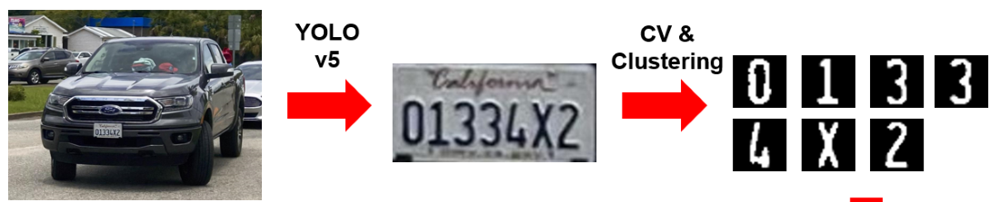
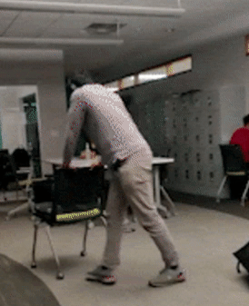
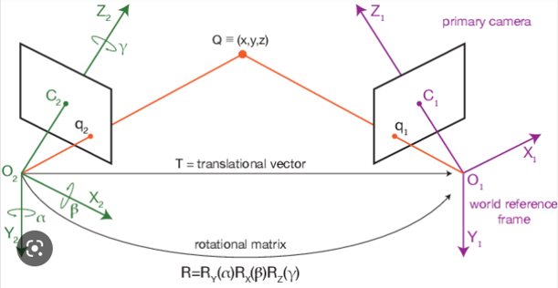
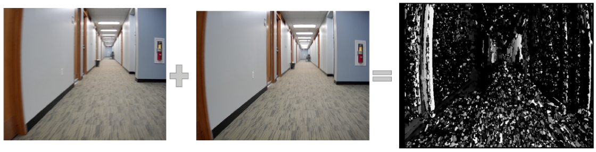

Autonomous License Plate Detection
Over the years, the traditional parking experience has remained largely unchanged: exhibiting outdated practices that rely heavily on manual ticketing systems. The conventional ticketing system necessitates physical tickets and manual payments at pay stations, causing inconveniences and inefficiencies. Automatic License Plate Detection (ALPD) can revolutionize the parking industry by eliminating all these manual components, providing a fully automated and streamlined parking experience in any parking scenario.
The projects seeks to develop an efficient ALPD system by combining Machine Learning (ML) and Computer Vision (CV) techniques, addressing the prevalent inaccuracies observed in many current solutions that solely depend on either ML or CV. The objective was to establish an optimized ML pipeline for ALPD using various machine learning models aided with pretrained networks and computer vision techniques to find the optimal Machine Learning (ML) pipeline for ALPD.

The task of detecting a license plate was divided into three fundamental components:
- Identifying the license plate bounding box
- Isolating the characters
- Predicting the characters
The image above shows the first two steps of locating a the license plate bounding box and splitting the characters into multiple individual images. A pretrained YOLOv5 network was employed to discern the license plate amidst a dataset of vehicle images. Post identification, the license plate's bounding box was extracted for further processing to segment the characters it contained. Subsequently, contour techniques were utilized to detect letter edges within the license plate, segmenting all enclosed letter ‘shapes’ into individual images for character classification
Three distinct classification algorithms, all trained on the EMNIST balanced dataset, were then assessed for character prediction: (1) K-nearest neighbor (KNN), (2) feedforward neural network (FNN), and (3) convoluted neural network (CNN). An ablation study was conducted on each ML pipeline to determine optimal hyperparameters and regularization settings, evaluating each model's detection performance under various angles and lighting conditions (edge cases).
| Model Type | Prediction Type | Accuracy (%) |
|---|---|---|
| KNN | Testing Accuracy (EMNIST) | 75.5 |
| Testing Accuracy (License Plate) | 18.6 | |
| FNN | Testing Accuracy (EMNIST) | 81.3 |
| Testing Accuracy (License Plate) | 82.0 | |
| CNN | Testing Accuracy (EMNIST) | 90.6 |
| Testing Accuracy (License Plate) | 66.7 |
The table above highlights the final results of all three models. Contrary to initial expectations favoring CNN for its feature extraction capabilities, the study revealed that the FNN model outperformed others with a testing accuracy of 88%, against CNN (67%) and KNN (19%). The findings affirm that employing feedforward neural networks in tandem with computer vision techniques can effectively detect license plate characters in real time across diverse conditions with minimal computational resources.
Live Motion Direction Estimation
This project delves into the burgeoning field of live motion direction estimation, a pivotal aspect of computer vision with broad implications for emerging technologies. In an era where autonomous systems, such as self-driving vehicles, augmented reality, and advanced surveillance, are becoming increasingly prevalent, the ability to accurately discern the direction of motion from video feeds is crucial. This initiative aims to develop a robust system capable of detecting and classifying camera movement directions in real-time, leveraging advanced image processing and machine learning techniques. This technology has the potential to greatly enhance the accuracy and reliability of motion-based applications.
The success of the algorithm depended on comprehensive data collection and innovative feature extraction methods. The team compiled a rich dataset consisting of approximately 4000 images. These images, derived from video feeds, were transformed into frames and further processed into disparity maps for detailed analysis. The disparity maps were classified into five distinct motion categories: forward, backward, turning left, turning right, and stationary.


The above gif shows one of the platforms the motion data was collected on. To avoid bias, the data was collected on multiple different platforms to keep the models from overfitting to a certain type of motion. For feature extraction, two primary methods were employed. The first involved analyzing changes in pixels over time by processing every fifth frame, providing insights into the fundamental aspects of frame change. The second method utilized the CV2.stereoSGBM_create function to generate disparity maps from grayscale images, aiding in the detection of pixel differences or motion between stereo images.

The project employed a rigorous evaluation process to determine the most effective method for live motion direction estimation. This involved testing various machine learning models, each offering unique strengths in handling image data and motion classification. The following models were evaluated:
- Naive Bayes Classifier: Achieved a baseline accuracy of 74.7%, serving as an initial benchmark for comparison with more complex models.
- Support Vector Classification (SVC): Demonstrated high efficacy with a 93% accuracy rate, benefiting from its strength in high-dimensional space handling.
- Linear Neural Networks: Scored an accuracy of 83%, offering insights into the performance of simpler neural network architectures in the task.
- Convolutional Neural Networks (CNN): Emerged as the most effective, with an impressive 94.6% accuracy, showcasing its superior capability in image processing and feature extraction.
Conclusively, the project underscores the superiority of CNN in live motion direction estimation, particularly in image processing applications. To improve further, enhancements such as data augmentation to address motion jitter can be applied to better predict. A demo of the CNN classifier predicting live motion is given in the gif below. Overall, the findings point towards the potential of CNN in real-world applications requiring precise motion direction analysis from video feeds.